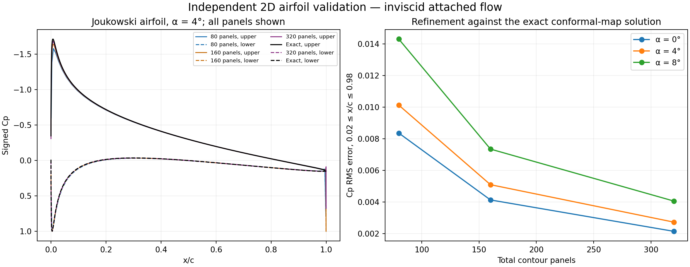
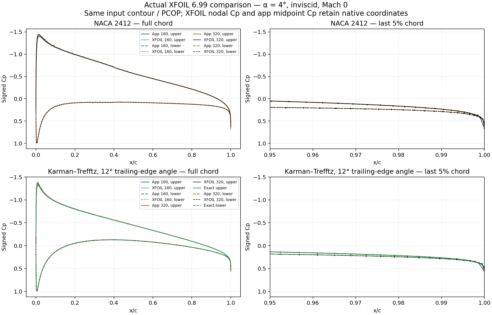
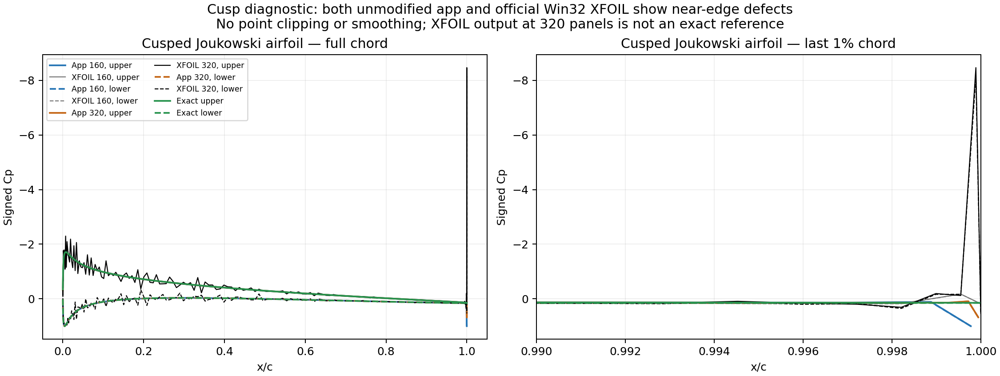
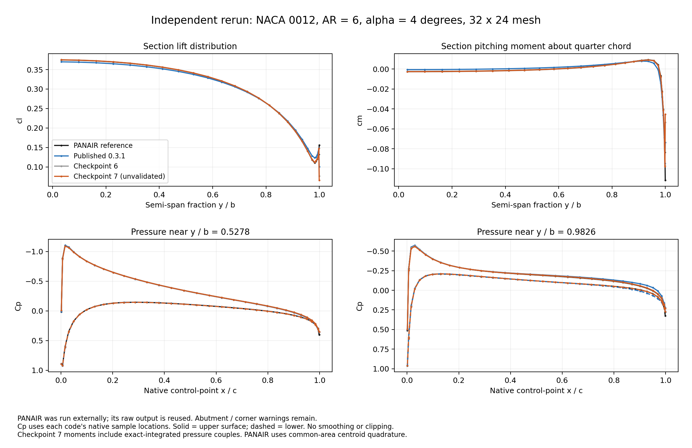

← Wing AeroStructNumerical validation
29 October 2026 · 2D airfoil and finite-thickness 3D wing · reproducible tests and signed physical profiles
Version-specific results. The public 3D solver remains 0.3.1. The quadratic-doublet results below are an experimental checkpoint, not a released replacement. Checkpoint 7 corrects a pressure-recovery inconsistency; unresolved tip and torque tests still prevent release. The independent 2D solver is already part of the public application.
2D airfoil: exact conformal-map reference
The reference is exact inviscid flow around a symmetric Joukowski airfoil (circle offset 0.08, radius 1.08, normalized chord). Four angles and three meshes were solved. Exact circulation lift is cross-checked by an independent dense pressure integral. No panel result supplies the expected pressure or force.

All computed profile samples are shown. Cp error statistics exclude x/c < 0.02 and x/c > 0.98; lift and moment retain all panels. The edge samples show the current local limitation. This is an inviscid verification, not wind-tunnel validation.
| α (deg) | Total panels | Computed cl | Exact cl | Cp RMS (2–98% chord) | |Δcm¼| |
|---|
| -4 | 80 | -0.4653634 | -0.4707590 | 0.01013 | 0.001012 |
| -4 | 160 | -0.4681083 | -0.4707590 | 0.00509 | 0.000479 |
| -4 | 320 | -0.4694458 | -0.4707590 | 0.00272 | 0.000232 |
| 0 | 80 | -0.0000000 | 0.0000000 | 0.00836 | 0.000000 |
| 0 | 160 | -0.0000000 | 0.0000000 | 0.00413 | 0.000000 |
| 0 | 320 | -0.0000000 | 0.0000000 | 0.00214 | 0.000000 |
| 4 | 80 | 0.4653634 | 0.4707590 | 0.01013 | 0.001012 |
| 4 | 160 | 0.4681083 | 0.4707590 | 0.00509 | 0.000479 |
| 4 | 320 | 0.4694458 | 0.4707590 | 0.00272 | 0.000232 |
| 8 | 80 | 0.9276168 | 0.9392245 | 0.01431 | 0.002004 |
| 8 | 160 | 0.9335288 | 0.9392245 | 0.00734 | 0.000948 |
| 8 | 320 | 0.9364049 | 0.9392245 | 0.00406 | 0.000460 |
At α = 4° and 320 panels, integrated lift error is 0.279% and Cp RMS is 0.00272 over the stated interior interval. Cp converges under refinement at all four tested angles. Residual inviscid pressure drag is numerical error, not a prediction of viscous profile drag. Near-edge point values require further refinement; they are not certified by the interior RMS.
2D trailing edge: XFOIL comparison
Official MIT XFOIL 6.99 was executed locally in inviscid, Mach-zero mode. PCOP preserves the supplied contour: no repaneling or geometry changes. Four profiles were tested at 160 and 320 total panels, α = 0° and 4°. XFOIL reports nodal Cp while this application reports segment-centre Cp; plots preserve their native abscissae.

Finite-angle profiles at α = 4°. The last 5% of chord is enlarged; the physical recovery toward stagnation is not removed or recoloured as suction.
| Profile | Total panels | Application cl | XFOIL cl | Application cm¼ | XFOIL cm¼ |
|---|
| joukowski | 160 | 0.4681083 | 0.4705000 | -0.0017195 | -0.0012000 |
| joukowski | 320 | 0.4694458 | 0.4721000 | -0.0014731 | -0.0015000 |
| karman_trefftz | 160 | 0.4819251 | 0.4844000 | -0.0078127 | -0.0074000 |
| karman_trefftz | 320 | 0.4832620 | 0.4849000 | -0.0076095 | -0.0075000 |
| naca0012 | 160 | 0.4797491 | 0.4825000 | -0.0059082 | -0.0054000 |
| naca0012 | 320 | 0.4812006 | 0.4824000 | -0.0056641 | -0.0054000 |
| naca2412 | 160 | 0.7371669 | 0.7413000 | -0.0613803 | -0.0612000 |
| naca2412 | 320 | 0.7394347 | 0.7412000 | -0.0612878 | -0.0611000 |
Cusped trailing edge: exact reference and limits
The exact Joukowski cusp has a finite, generally nonstagnant TE velocity. A finite wedge and a cusp do not have the same edge limit. The public application has a last-panel Cp error even where integrated lift converges. Official Win32 XFOIL also exhibits near-cusp oscillations in this test, so its output is not an exact reference. One α = 0°, 320-panel XFOIL run has unreadable Cp entries and is retained as a reference-format failure. The exact conformal solution is the decisive reference for this case.

No points are clipped, smoothed or silently excluded from forces and moments. The cusp repair is pending; these plots document the defect rather than claiming it fixed.
Finite-angle comparison PDF · Cusp diagnostic PDF · Raw comparison data · Official XFOIL source and documentation.
3D wing: PANAIR and previous solver
NACA 0012, rectangular wing, full span 1200 mm, chord 200 mm, AR = 6, α = 4°. The 32 × 24 setting is compared with stored PANAIR output. PANAIR was run externally; the local independent comparison reuses its raw output. Its abutment/corner warnings remain applicable. Native Cp control points differ slightly, so each curve keeps its own x/c. Application moments include each version’s actual integrated panel forces and couples. PANAIR Cm here uses its centroid Cp with common-area quadrature; it is an integration comparison, not an identical-point or identical-quadrature moment benchmark.

Checkpoint 7 adds exact pressure couples. Local tip pressure and moment retain their disagreement; total lift convergence does not certify a tip extremum.
| Solver | Trefftz CL | Trefftz CDi | Cm¼ |
|---|
| Public 0.3.1 | 0.3133800 | 0.00530916 | 0.00101415 |
| Quadratic checkpoint 6 | 0.3170199 | 0.00541120 | -0.00030804 |
| PANAIR reference | 0.3165290 | 0.00540159 | -0.00006912 |
| Quadratic checkpoint 7 | 0.3170199 | 0.00541120 | -0.00018961 |
For this case, absolute relative disagreement with PANAIR falls from 0.995% to 0.155% in Trefftz CL and from 1.712% to 0.178% in CDi. These are case-specific results. Checkpoint 7’s Cm¼ changes from −0.000308 to −0.000190 (PANAIR common-area value −0.0000691). Local tip Cp and torque reliability still require validation.
What the experimental formulation changes
Doublet strength varies quadratically in chord and span. The physical triangle kernels integrate a P2 interpolant; body and wake traces match pointwise at the trailing edge. Off-body velocities are checked at common physical coordinates. Checkpoint 6 differentiated a parent mapped polynomial at a different point and normal. Checkpoint 7 instead differentiates the same physical P2 triangle polynomial used by the influence kernel, then integrates its quadratic pressure and moment exactly. A finite-dimensional internal Dirichlet condition is imposed at collocation points; interior leakage between them remains, particularly near the tip. The focused jump and quadrature tests pass independently, but this does not prove continuum accuracy at a sharp edge. No Cp clipping, smoothing, geometry trimming or relaxed acceptance threshold is used to hide it.
Off-body velocity and runtime
An independent 88-point, all-exact off-body test differentiates the solved potential. Halving the finite-difference step changes normalized velocity by at most 4.15 × 10⁻⁸. Interior velocity-component RMS disagreement with PANAIR changes from 0.005866 to 0.000320. The comparison preserves PANAIR printed precision and mesh differences.
The earlier independent checkpoint-6 Worker timing is retained in the data. Author-supplied checkpoint-7 timing is separate: three Chromium runs gave Standard median 8.36 → 7.37 s and Fine 24.08 → 24.33 s relative to 0.3.1. Its Node Fine median was 18.4% slower. Hardware and harness differ; these are not universal speedup claims.
Checks and remaining limits
Passing kernel tests establish implementation consistency; external profiles and mesh studies assess accuracy. Failed original criteria stay failed. Stored results from another numerical formulation are not silently regenerated to create passing tests.
| Original/focused suite | Independent checkpoint-7 outcome | Recorded failed criteria |
|---|
| test_wing_aero_tensor_doublet | Passed | — |
| test_wing_aero_span_doublet | Passed | — |
| test_wing_aero_kernels | Passed | — |
| test_wing_aero_closed_bodies | Passed | — |
| test_wing_aero_vlm | Passed | — |
| test_wing_aero_trefftz | Passed | — |
| test_wing_aero_transfer | Passed | — |
| test_wing_aero_conformal | Not passed | 2 |
| test_wing_aero_wing | Not passed | 1 |
| test_wing_aero_admission | Not passed | 82 |
| test_aerostruct_twist | Not passed | 18 |
| test_aerostruct_engine_fork | Not passed | — |
| test_aerostruct_study_io | Not passed | — |
The independent Windows-compatible IO rerun passes 51 AeroStruct checks and the unchanged 1062 Wing Lab checks. The only harness change is file-URL path conversion; numerical predicates and tolerances are unchanged. The engine’s independent six-component equilibrium checks pass; its final Unix diff utility is unavailable on this host. Original harness errors remain listed above as not passed. Harness portability is distinct from numerical accuracy. Admission and twist uncertainties remain release blockers. No viscous flow, transition, separation, stall, rolled-up wake or fluid–structure iteration is validated here.
Data and reproduction
2D figure PDF · 3D figure PDF · 2D profiles CSV · 2D full results · 3D full results · Original test receipts · Independent review
2D reproduction script · Off-body samples · Browser timing receipts. Run the 2D reproduction script with Node.js from its saved validation folder; an optional command-line argument selects another application directory. It reads that application's actual source. Version and reference provenance · Separate checkpoint-7 timing · JSON compatibility receipt.
Reference formulations and provenance
PANAIR high-order panel method · MachLine panel formulation · Linear vortex-panel equations. Sharing the potential-flow method family does not establish identical accuracy or copied source code.
Public bundle SHA-256: 1b242ffe7126ea9c568ea3c47636c3d65bc8366afe1ba5e13cacc9f0cd2c650f. Experimental checkpoint 7 core SHA-256: 9a0d405ba35f4edb0e142ebd8dcb2f69c5627e9b0a93787f97a39f724776a695.